🔖原文信息（编者中文重排）
📚 文献信息
▪ Colonna S, D'Alessandro A, Tarozzi R, Casacci F. Supine Bridge Exercise for Low Back Pain: A Fascial Approach for Movement Impairment Syndromes (Part II). Cureus. 2025;17(5):e83785. doi:10.7759/cureus.83785
▪ 作者单位：意大利博洛尼亚脊柱中心、骨科整骨脊柱教育中心（OSCE）
▪ 文章类型：综述＋作者提出的理论模型，三部曲的第二篇（第一篇讲桥的做法和肌电，见上一篇推文）
作者提出：桥式用于腰痛，不只是为了练肌力，而是为了提高腰部筋膜的“张力”、增加节段稳定；并且要按腰痛的类型用不同的做法——屈曲型和伸展型几乎是反着来的。
• 腰痛与腰伸肌无力、耐力差有关；健康人能保持完全伸髋的桥约 170 秒，慢性腰痛患者约 76 秒，所以桥也常用来评估腰椎稳定耐力
• 腰椎前凸和腰痛的关系一直有争议：传统观点认为前凸过大引起腰痛，但不少研究发现前凸减小（平背）更常见于腰痛、椎间盘突出和退变；也有荟萃分析认为两者没有差别
• 作者认为矛盾来自把所有“腰痛”混为一谈，应按 Sahrmann / Van Dillen 的运动损伤综合征分型：哪个方向的动作和姿势诱发症状，就叫什么型
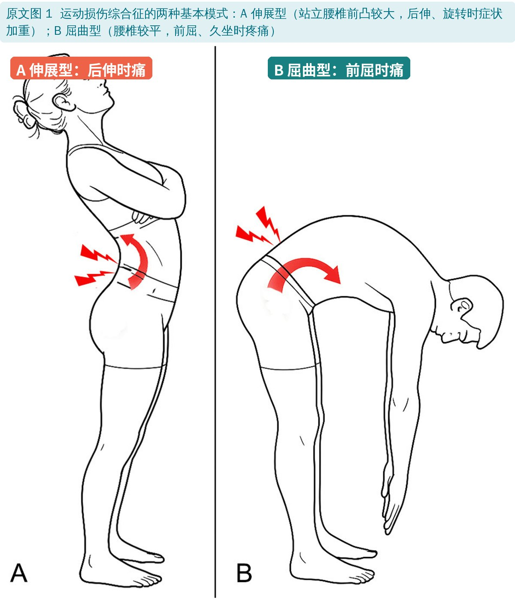
🔖原文图 1：伸展型与屈曲型
• 伸展型（伸展—旋转型）：站立时腰椎前凸更大，后伸、旋转时症状加重，久站不舒服
• 屈曲型（屈曲—旋转型）：腰椎较平，前屈或久坐时、之后疼痛
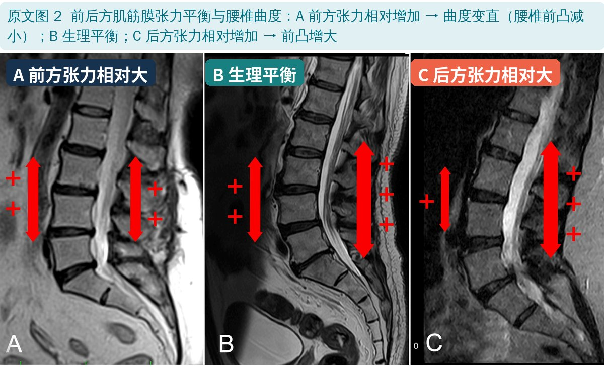
🔖原文图 2：前后方肌筋膜张力平衡与腰椎曲度
• 维持腰椎生理曲度需要前后方筋膜张力平衡；平衡被打破，曲度就会改变
• 蠕变：长时间弯腰或塌腰坐，脊柱后方的韧带、筋膜会被慢慢拉松（蠕变），抵抗前屈的能力下降，形成恶性循环；恢复需要的时间比造成它的时间更长
• 被动组织松了，竖脊肌就得多出力来补偿——这可能是腰痛患者肌电偏高、超声弹性成像测到肌肉“更硬”的原因
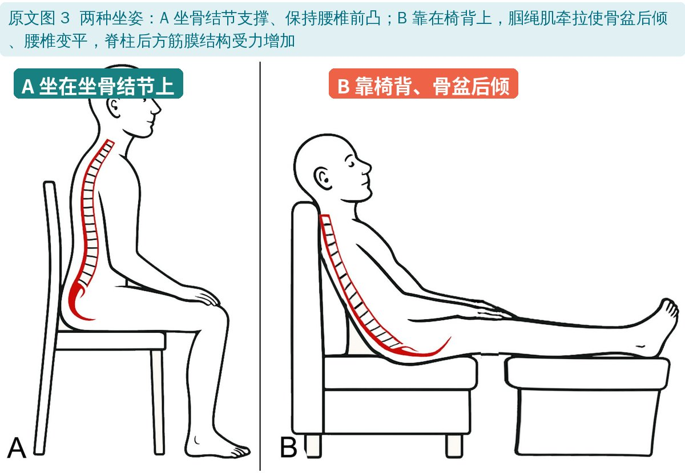
🔖原文图 3：两种坐姿
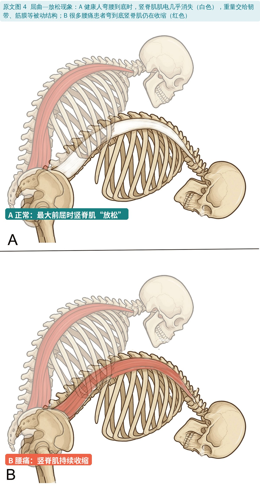
🔖原文图 4：屈曲—放松现象
• 屈曲—放松现象：健康人弯腰到底时竖脊肌肌电几乎消失，负荷交给被动组织；很多腰痛患者这时竖脊肌仍在收缩
• 一项 12 周稳定训练（含桥）能减轻疼痛、恢复这一现象，其变化可解释功能评分改善的 38%
• 作者据此认为，腰痛的问题更多在与肌肉并联的被动筋膜，康复应着重增强筋膜，而不只是练收缩力量
• 腘绳肌紧张与腰痛严重程度相关：紧张会限制骨盆前倾，弯腰时腰椎被迫多弯，加速后方筋膜蠕变——作者认为屈曲型腰痛可能与腘绳肌短缩有关
• 单独练腰伸肌并不容易：负荷一大，臀大肌和股二头肌会接管更多
• 离心训练后肌肉“硬度”常增加，胶原合成可增加约 300%，重复训练还有“重复负荷效应”；作者推测运动的损伤与修复主要发生在肌肉的结缔组织（筋膜）上，可让筋膜更结实——但这些研究都不是脊柱肌肉
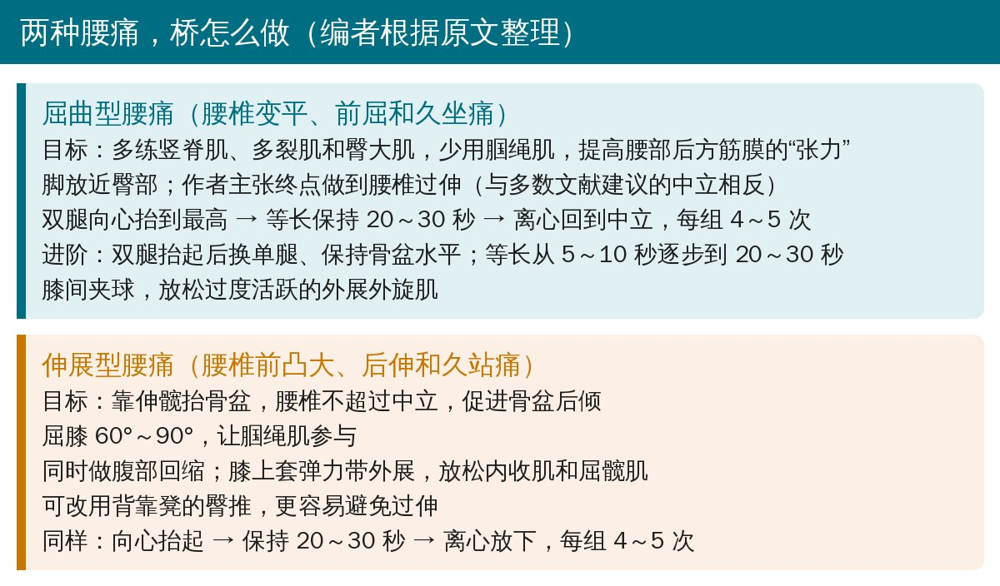
🔖两种腰痛的桥式做法对照（编者根据原文整理）
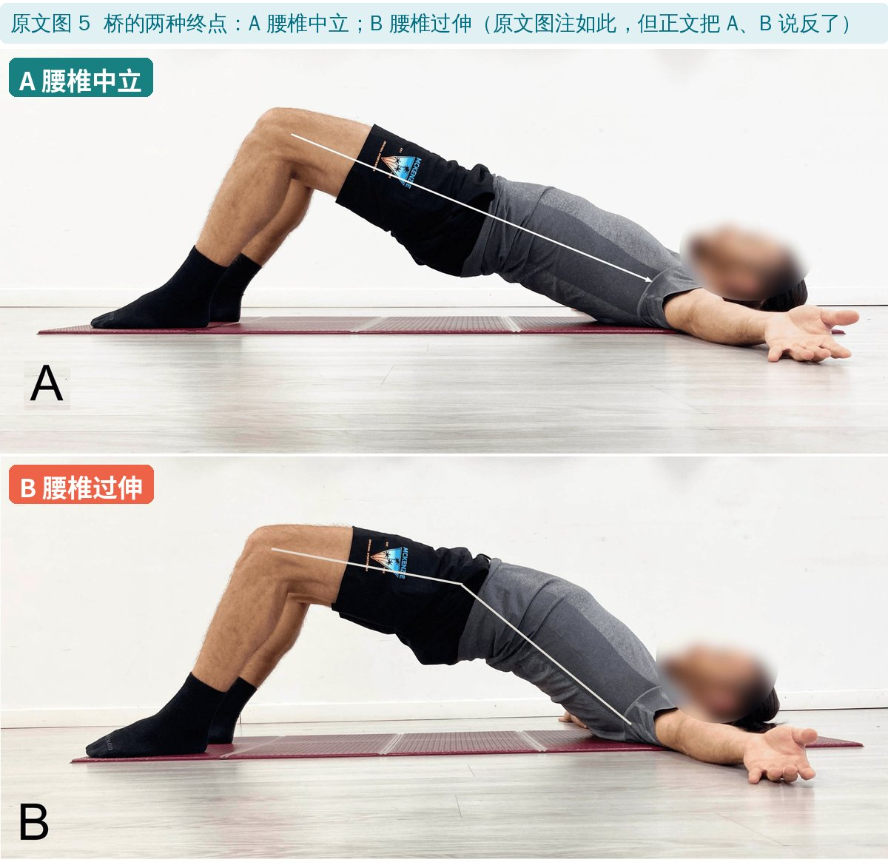
🔖原文图 5：腰椎中立与腰椎过伸
• 目标：最大限度激活竖脊肌、多裂肌和臀大肌，同时减少腘绳肌；脚放近臀部
• 与多数文献不同：作者主张终点做到腰椎过伸，理由是在肌肉相对拉长的范围里训练会降低“张力”，而屈曲型腰痛需要的是增加后方张力
• 剂量：双腿向心把骨盆抬到最高（含腰椎过伸）→ 等长保持 20～30 秒 → 离心回到中立；每组 4～5 次
• 进阶：双腿抬起后换单腿、保持骨盆水平（单侧负荷和扭转负荷，适合单侧问题和屈曲—旋转型）；等长从 5～10 秒开始逐步到 20～30 秒
• 膝间夹球：屈曲型患者的外展外旋肌链常过度活跃，夹球激活内收肌，通过交互抑制让它们放松
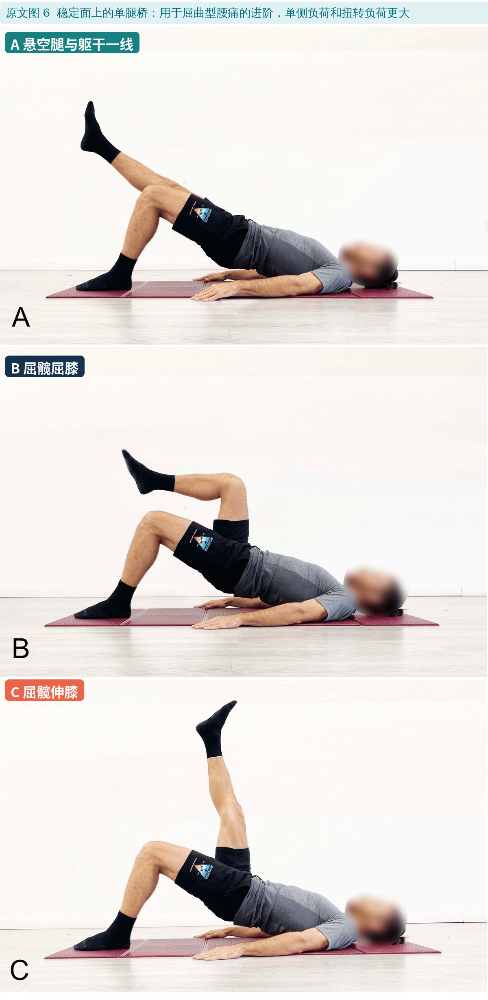
🔖原文图 6：单腿桥
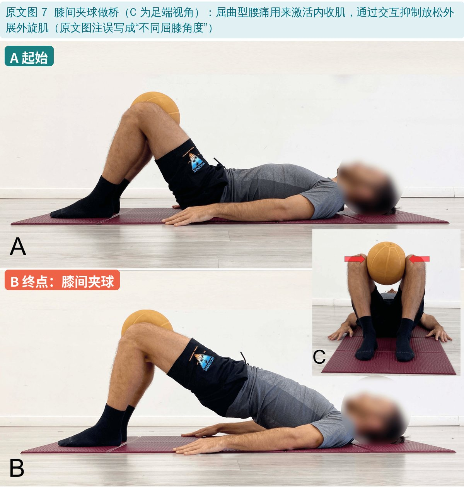
🔖原文图 7：膝间夹球
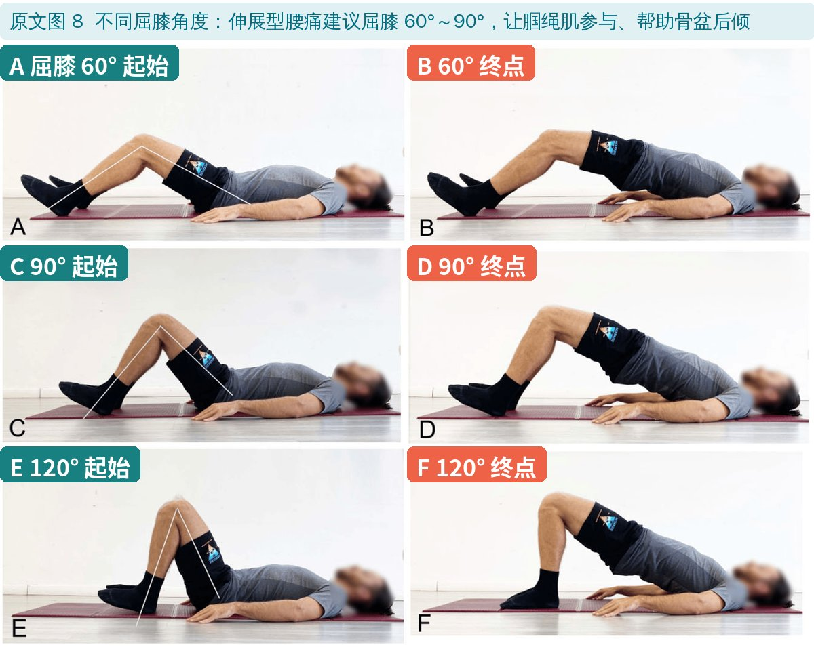
🔖原文图 8：不同屈膝角度
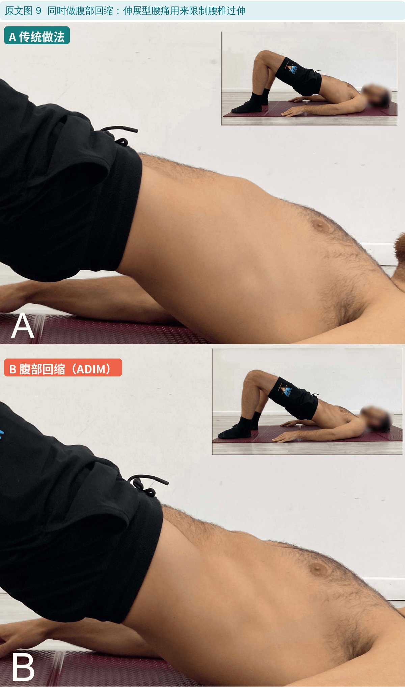
🔖原文图 9：腹部回缩
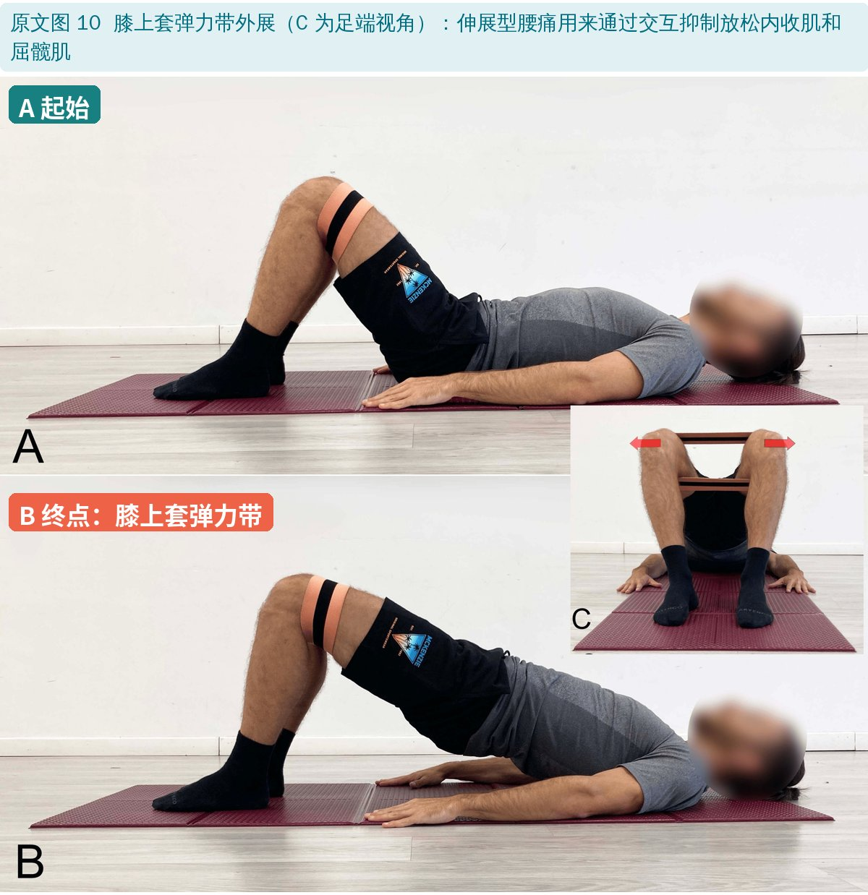
🔖原文图 10：膝上套弹力带
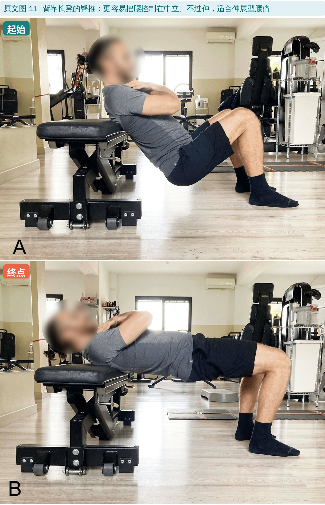
🔖原文图 11：背靠长凳的臀推
• 骨盆主要靠伸髋抬起，腰椎不超过中立
• 屈膝 60°～90°，让腘绳肌参与，促进骨盆后倾（腘绳肌长度与腰椎前凸成反比）
• 同时做腹部回缩，限制腰椎后伸；膝上套弹力带外展，通过交互抑制放松过度活跃的内收肌和屈髋肌
• 可改用背靠凳的臀推，作者认为更容易避免腰椎过伸
• 剂量同上：向心抬到最高（不过伸）→ 保持 20～30 秒 → 离心放下，每组 4～5 次
• 主要是理论：作者自己承认，“桥能改变筋膜张力”目前没有直接证据，需要影像和生物力学研究验证，分型做法也没有临床试验
• 推理链条很长：从其他部位（肘屈肌、股四头肌等）离心训练后的“硬度”变化，推到腰部筋膜、再推到桥式，每一步都有不确定性
• 与第一篇的数据不完全一致：第一篇的肌电排行显示，竖脊肌在屈膝较小（脚放远）时最高，脚放近时竖脊肌也会下降；“脚放近、多练腰背”需要权衡
• “过伸”建议有争议：多数研究和临床建议桥时避免腰椎过伸，屈曲型患者做过伸的安全性和效果都没有被检验
• 作者致谢中说明使用了 ChatGPT 润色语言
• 优点：提醒临床按诱发方向区分腰痛，同一个动作根据分型调整踝、膝、腰的角度和附加动作，思路清楚、可操作
• 图 5 的 A、B 说反了：图注是“A 中立、B 过伸”，正文却写“做到腰椎过伸（图 5A）而不是中立（图 5B）”
• 图 7 图注贴错：正文说的是膝间夹球（图片也是夹球），图注却是“不同屈膝角度 A～F”，与图 8 重复
• 图 2 的说法前后相反：正文说“后方张力降低导致前凸增大（图 2C）”，图注却写 C 是“后方张力相对增加”
• 腹部回缩的目的：原文写“为了增加髋伸肌筋膜系统的张力以进一步限制腰椎后伸，建议同时收腹”，逻辑上应是腹肌，表述混乱
• 引用错位：“姿势不良导致脊柱负荷增加的确切机制尚不清楚”引的文献 3 是关于投掷动作的肌肉激活研究
• 检索数字：第一篇说 Google Scholar 约 1500 篇，本篇说约 1400 篇
• 先分型，再选做法：前屈、久坐痛 → 屈曲型；后伸、久站痛 → 伸展型
• 伸展型：腰不过中立、屈膝 60°～90°、收腹、膝上套带，或改做背靠凳臀推——这些做法和主流建议一致，可以放心用
• 屈曲型：脚放近、膝间夹球、逐步加单腿和等长时间是合理的；“做到腰椎过伸”是作者的理论建议，用之前要先确认患者做后伸不诱发症状，从小幅度开始
• 剂量参考：向心抬起 → 等长 20～30 秒 → 离心放下，4～5 次一组
• 筋膜理论仍待验证，评估效果还是要看疼痛、功能和动作控制的变化
欢迎关注骨科康复小黄公众号，获取更多物理治疗的专业知识！
📄参考文献：
Colonna S, D'Alessandro A, Tarozzi R, Casacci F. Supine Bridge Exercise for Low Back Pain: A Fascial Approach for Movement Impairment Syndromes (Part II). Cureus. 2025;17(5):e83785. doi:10.7759/cureus.83785
原文以 CC BY 4.0 协议开放获取，版权归原作者所有。本文为学术交流用的中文解读：原文图 1～11 引自原文，图中中文标签为编者所加；做法对照卡为编者根据原文整理。如有侵权请联系删除。